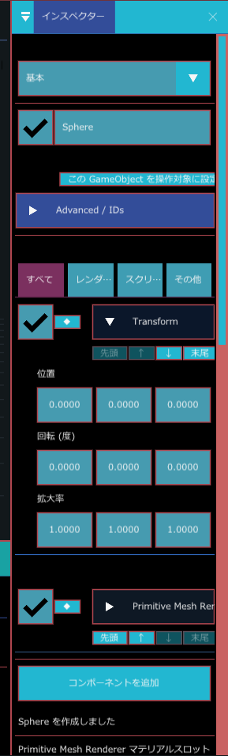
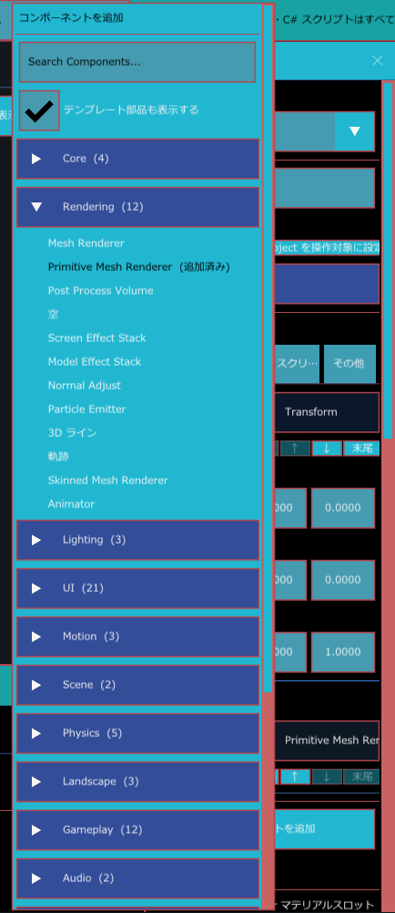

インスペクター
画面右の インスペクター パネルには、選んでいる物の中身が表示されます。GameObject を選んでいるときは、名前や有効・無効と、付いているコンポーネントの設定がここに並びます。値を変えるとすぐシーンに反映されます。

こんなときに使う
- 選んだ GameObject の位置、色、強さなどの設定を変えたいとき
- GameObject にコンポーネント（ライト、当たり判定、スクリプトなど）を付けたい・外したいとき
- 付いているコンポーネントが多く、見たいものを探しにくいとき（4 つのタブ）
- ワールド（プロジェクト設定など）やカメラの設定を開きたいとき
いちばん上：編集テーブル
パネルの最上部に、薄い文字の 編集テーブル と、パネル幅いっぱいの選択欄があります。選べるのは 基本、配置、モデリング、アニメーション、レンダリング、シェーダー調整 の 6 つです。
UI Workspace や Motion Workspace に切り替えているときは、この 6 つのどれにも当てはまらないため、選択欄は何も選ばれていない表示になります。
何が表示されるか
インスペクターの中身は、最後に選んだ物によって変わります。
| 選んだ物 | 表示される内容 |
|---|---|
| GameObject（階層パネルかシーンビューで選択） | GameObject のヘッダーとコンポーネント。このページの以下で説明します。 |
| ワールド（階層パネルの「ワールド」、またはシーンビューの何もない場所をクリック） | 「ワールド」の見出しの下に、Scene / Game 背景色、背景画像、ゲームシーン、パーティクル、軌跡、プロジェクト設定、カメラ操作の関門などが並びます。 |
| メインカメラ（階層パネルの「メインカメラ」） | 「カメラ」の見出しの下に、シーンビュー用の編集カメラの設定と、「Runtime Camera（ゲーム内）」の情報が並びます。 |
| アセット（プロジェクトパネルで選択） | アセットの名前とファイルの場所。Prefab なら Prefab の情報。 |
シーンが開かれていないときは「シーンが読み込まれていません」、GameObject を選んでいないときは「GameObject が選択されていません」と表示されます。
GameObject のヘッダー
GameObject を 1 つ選ぶと、上から次の順に表示されます。
- 有効チェックボックスと名前欄：チェックを外すと GameObject が無効になります。名前欄は、文字を入れて Enter を押すと決まります。同じ親の下に同じ名前があると「同じ階層に同名 GameObject があります（参照は ObjectID なので維持されます）」と表示されますが、名前はそのまま使えます。
- 親: （親の名前）：親が無いときは「親: なし（シーン直下）」です。
- 操作対象:：この GameObject がゲーム実行時の操作対象なら、緑の文字で「この GameObject」と表示されます。そうでないときは この GameObject を操作対象に設定 ボタンが出ます。押すとこの GameObject が操作対象になり、「（名前） を操作対象にしました」と表示されます。
- この GameObject の診断：この GameObject に問題が見つかったときだけ開いた状態で出ます。エラーは赤、警告は橙で、コードと説明、直し方の案が並びます。
- Prefab の情報：Prefab から置いた GameObject のときだけ出ます（Prefab）。
- Advanced / IDs：開くと、この GameObject の ObjectID と、親の ObjectID が表示されます。
有効・無効、名前、操作対象の変更は、どれも Ctrl+Z で元に戻せます。
コンポーネントの表示：4 つのタブ
ヘッダーの下に「分類を開くと設定を表示します。順序は ◆ / ボタン / ドラッグで変更できます」と表示され、その下に 4 つのタブがあります。
| タブ | 表示されるコンポーネント | 並び方 |
|---|---|---|
| すべて | 付いているコンポーネント全部 | 分類でまとめず、付けた順に 1 列 |
| レンダー | 分類が Rendering、Lighting、Camera、Landscape、UI のもの | 分類ごとの見出しの中 |
| スクリプト / 動作 | 分類が Scripting、Gameplay、Motion、Physics、Navigation、Audio のもの | 分類ごとの見出しの中 |
| その他 | それ以外（Core、Editor、Scene など） | 分類ごとの見出しの中 |
「すべて」以外のタブでは、分類ごとに「Rendering (2) Mesh Renderer / Point Light」のような見出しが出ます。見出しには分類名、その分類のコンポーネント数、名前の一覧が並び、クリックすると中のコンポーネントが開きます。該当するコンポーネントが無いタブでは「この分類にはコンポーネントがありません」と表示されます。
コンポーネントの行
コンポーネント 1 つにつき、次の部品が並びます。
- 有効チェックボックス（左端）：チェックを外すと、そのコンポーネントだけが無効になります。
- ◆：並べ替え用のつまみです。押したままドラッグして、別のコンポーネントの行の上下に落とすと順番が変わります。ドラッグ中はタブの上に「移動中: （名前） 落としたい行の上下へ」と表示されます。
- 見出し：コンポーネント名です。分類ごとの色で塗られています（色は Window > UI の見た目 > Component カテゴリ色 で変えられます）。クリックすると設定が開きます。マウスを乗せると、そのコンポーネントの説明が出ます。
- 先頭 / ↑ / ↓ / 末尾（見出しの下）：押すと、いちばん上へ、1 つ上へ、1 つ下へ、いちばん下へ移動します。すでに端にあるときは、その方向のボタンが薄くなります。
並べ替えると「コンポーネントの順序を変更しました」と表示されます。並べ替えも Ctrl+Z で戻せます。
C# スクリプトのコンポーネントは、見出しが「（クラス名） (Script)」になります。スクリプトが指定されていないときは「Script (未指定)」です。
コンポーネントを開いたとき
見出しをクリックして開くと、上から次のものが表示されます。
- 必須・推奨の警告：このコンポーネントが一緒に必要とするコンポーネントが無いと、赤で「必須: （名前） がありません」、あったほうがよいものが無いと橙で「推奨: （名前） がありません」と表示されます。右の 追加 ボタンで、そのコンポーネントを付けられます。さらに必要なものがあれば一緒に付き、「（必須 Component N 個を自動追加）」と表示されます。
- 設定欄：コンポーネントの設定がすべて並びます。設定が 1 つも無いコンポーネントでは「編集できる設定はありません」と表示されます。
- コンポーネントを削除 ボタン（いちばん下）
コンポーネントによっては、設定欄の前に次のような情報も出ます。
- C# スクリプト：「状態」と、状態ごとの説明、「インスタンス: あり / なし」。失敗しているときは赤で「理由」が出ます。状態の説明は次のとおりです。
- Running：インスタンス生成済み。Update が回っています
- Loaded：型は解決済み。Play を押すとインスタンスが作られます
- Unresolved：型が未解決。Build && Reload C# と Refresh C# Catalog を試してください
- Unassigned：Script が未指定です
- Error：下の理由を確認してください
- Directional Light：シーン内で有効な Directional Light が 2 つ以上あると、「Directional Light が N 個有効です。Runtime は先頭の 1 個だけを使用します。」と橙で表示されます。
- Landscape：同じ GameObject に Primitive Mesh Renderer もあると、重なって表示される注意が出ます。設定値で平面を再生成 ボタンで、地形を平らな面に作り直せます（確認が出て、Undo できます）。
値の入れ方
- 数値：欄の上で左右にドラッグすると値が増減します。Ctrl を押しながらクリックすると、文字で数値を入力できます。
- チェックボックス：クリックでオン・オフを切り替えます。
- 選択欄：クリックして一覧から選びます。
1 回のドラッグや入力で変えた値は、まとめて 1 回分の変更として Ctrl+Z で戻せます。
コンポーネントを追加する
- コンポーネントの一覧の下にある、パネル幅いっぱいの コンポーネントを追加 ボタンを押します。
- コンポーネントを追加 の一覧が開きます。分類の見出しをクリックして開くか、いちばん上の Search Components... に名前を入れて探します。
- 付けたいコンポーネント名をクリックします。

分類の見出しには、その分類のコンポーネント数が「Rendering (12)」のように付きます。テンプレート部品も表示する のチェックを外すと、ゲーム用のテンプレート部品が一覧から隠れます。この設定はプロジェクト設定に保存されます。
実行中は、ボタンの代わりに「実行中はコンポーネントを変更できません」と表示されます。
コンポーネントを削除する
削除のしかたは 2 つあります。
- コンポーネントを開いて、いちばん下の コンポーネントを削除 ボタンを押す
- コンポーネントの見出しを右クリックして コンポーネントを削除 を選ぶ
削除すると「（名前） を削除しました」と表示され、Ctrl+Z で戻せます。次の場合は削除できません。
| 場合 | 表示 |
|---|---|
| 削除できない種類のコンポーネント | 「このコンポーネントは削除できません」（ボタンの代わりに表示） |
| 実行中 | 「実行中は削除できません」 |
| 別のコンポーネントが必須として使っている | ボタンが薄くなり「（使っている側の名前） が必須として使用中」 |
見つからないコンポーネント
シーンファイルに書かれているコンポーネントの種類が、今のエンジンに無いときは、中身を預かったまま「見つからないコンポーネント」として表示されます。預かっている設定の一覧が読み取り専用で表示され、「型が使えるようになれば、次に読み込んだ時点で自動的に復元されます。」「保存し直しても、この内容は元の型として書き戻されます。」と説明が出ます。
この Missing Component を削除 ボタンで消せますが、「削除すると、預かっている内容も一緒に失われます。」
複数の GameObject を選んだとき
階層パネルで Ctrl や Shift を押しながらクリックして、GameObject を複数選ぶと、インスペクターが複数選択用の表示に変わります（階層パネル）。
- いちばん上に 「○ GameObjects」 と、「共通する Component と Property を一括編集します」と出ます。
- Enabled：選んだ GameObject の有効・無効をまとめて切り替えます。選んだものの状態がそろっていないときは、チェックが「混在」の表示になります。
- Advanced / IDs を開くと、選んだ GameObject の名前と ID が並びます。
- その下に、選んだ全部が持っているコンポーネントだけが並びます。項目を変えると、選んだ全部に同じ値が入ります。値がそろっていない項目は、混在の表示になります。コンポーネントの有効チェックも、まとめて切り替えられます。
- いちばん下の コンポーネントを一括追加 を押すと、選んだ全部にコンポーネントを追加できます。すでに全部が持っているものは「（追加済み）」と薄く出ます。必須のコンポーネントが足りないときは、自動で一緒に付きます。結果は「○○ を N 個へ追加しました」と出ます。
- 各コンポーネントの 選択対象から一括削除 で、選んだ全部から外せます。確認の窓で 削除 を押します。ほかのコンポーネントが必須として使っているものは、「一括削除不可」と理由が出て、押せません。
一括での追加・削除・値の変更は、どれも Undo（元に戻す）できます。ゲームの実行中は、コンポーネントの追加・削除はできません（「実行中はコンポーネントを変更できません」と出ます）。
実行中の表示
ゲームを実行している間は、インスペクターの上に「実行中（読み取り専用）」と「プレイ中の変更は編集シーンへ保存されません」が表示され、設定欄は薄くなって変更できなくなります。
使い方の例
立方体に当たり判定を付ける
- 階層パネルで立方体を選びます。
- インスペクターの下の コンポーネントを追加 を押し、いちばん上の検索欄に
Boxと入れます。 - Box Collider をクリックして付けます。付けたコンポーネントの見出しを開くと、大きさなどを変えられます（物理（Rigidbody と Collider））。
数値をきっちり入れる
- 変えたい数値の欄を、Ctrl を押しながらクリックします。
- 文字で入力できるようになるので、数値を入れて Enter を押します。
- 間違えたときは Ctrl+Z で元に戻します。
プロジェクト設定を開く
- 階層パネルの ゲームシーン にある ワールド を選びます（シーンビューの何もない場所をクリックしても同じです）。
- インスペクターに出る プロジェクト設定 を開きます。起動シーンや Localization などを設定できます（プロジェクト設定）。